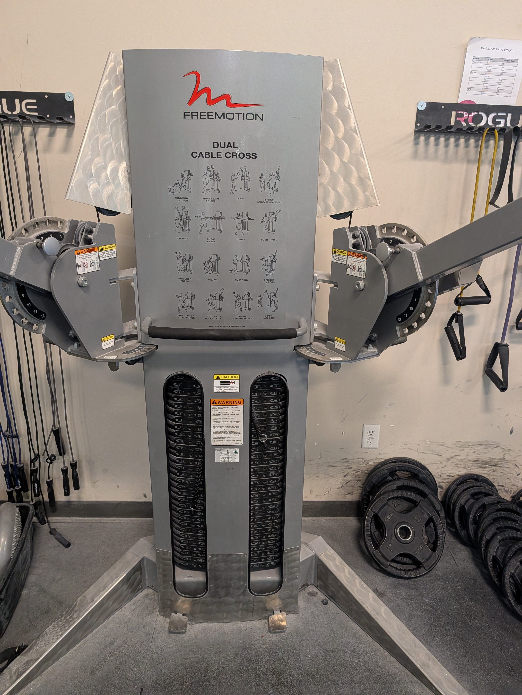
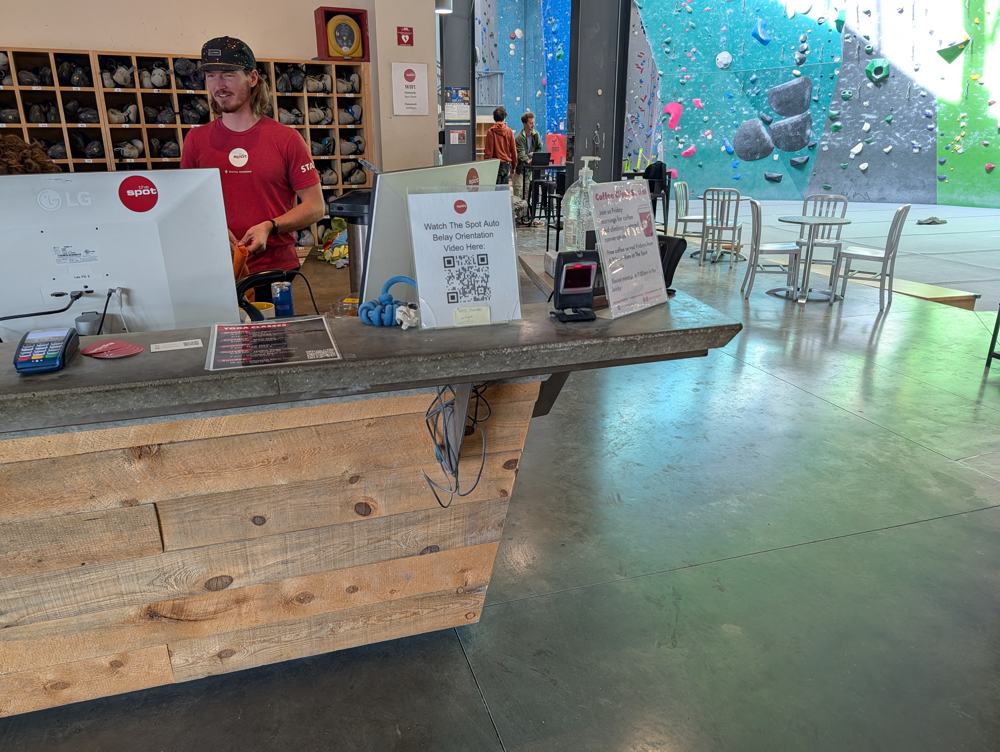
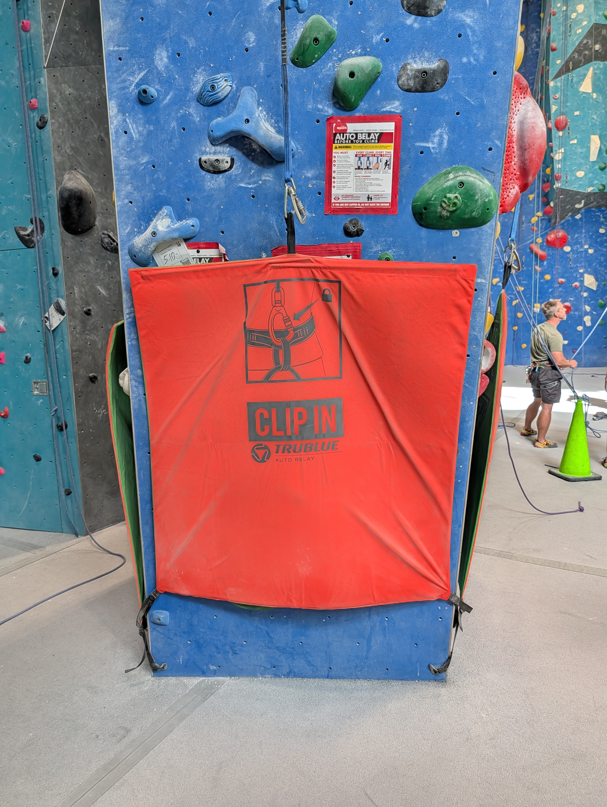

False Affordance
Something appears to indicate that it should be used one way, but interaction reveals that it requires an alternative physical interaction.
Design Methods
A collection of my work exploring design, technology, creativity, and the process of turning ideas into reality.
01
Design Methods · Fall 2026
In our first meeting, you spend a brief time exercising the rudiments of the design process- gathering information, ideating, prototyping, testing and analyzing. While the exercise content was somewhat trivial, this hopefully provides a "skeleton" for your process as we get into more complex and diverse topics in the class. Prompt For this follow-up, take the interface concept you developed for your partner, and considering their feedback, create a considerably higher fidelity prototype for the design, using whatever design tools you feel most comfortable with. Express the results in whatever media form you choose.
My Partner Expressed that he has an earlier class on Wednesdays and later an evening class. He expressed difficulty figuring out what to do during the day because he didn't want to travel all the way home. I decided to create a magical device that would give him a randomly generated side quest to help him pass the time in a productive manner. With a few inputs, the device would generate a unique side quest each time and he could customize the quest using a series of buttons on the device itself.
He could use the sliders to change the length of time the quest would take and the difficulty of the quest. Because my partner is bilingual, there is also an option to change the base language of the quest.


This was the first project I've done in a while with a focus on design. I am an engineer by trade, and while I have worked with design as a hobby. I have never had a design class. From the experience, I learned that one of the hardest parts for me in this class is setting up GitHub to display my work.
02
Design Methods · Fall 2026
Background:
The year is 2029. You are a designer living in the former Republic of Bezoslavia, western North America. In the devastating aftermath of the Second Corporate War of Alphabets, the ascendant political regime has banned any and all organizational branding, trademarks, logos, and associated advertising. It has mandated that any packaged products and storefronts can only be labeled with, at most, three English words that specifically describe their contents. Furthermore, as a concession to the powerful High Church of Imagery, all photorealism is banned for civilian communication purposes. The approved forms of visual communication are, according to state law:
1. Abstract visual forms, designs, and symbols.
2. Representational symbolism, provided they are not photorealistic.
3. Typefaces and lettering, provided they do not evoke any trademarks of “old corporate powers”.
4. Unlimited use of color.
5. All signs and packages are allotted up to three words each. (Hyphenated and compound words are counted as a single word.)
Design Challenge:
Despite these draconian restrictions around communications, all pre-war corporations and organizations still operate, and produce their respective goods and services. However, the new rules have left them bewildered as to how to distinguish themselves in the marketplace, or communicate to customers where they are located, and what they sell. Your task: prepare a design pitch for a surviving organization (aka any 2026 company) by creating a unique visual communication system within state regulations. Specifically, apply the concept to: A storefront A product package At least one other piece relevant collateral (e.g. uniforms, containers, interior signage, stationery, etc.)
For this project, I chose Gearage, a small outdoor consignment store located in Fort Collins, Colorado. I chose Gearage because I have worked there quite a bit and wanted to create something that felt close to home. For the redesign, I used colors that the shop already incorporates into its branding. I focused on the types of outdoor goods the store sells and the unique way Gearage gives used gear a second life through consignment. Most of the feedback I got was for the symbol quality and readability. I have corrected that. There were also comments about the words I chose, so I switched to outdoor instead of adventure. I did keep consignment just because that idea is incredibly hard to translate into symbols or other words; hence why we have a dedicated word for the idea.


This project was really hard fr me because I have very little illustration and photo manipulation skills. After the feedback from classmates and the instructor, I will try to get a little nicer images. I just learned about vector images vs. raster images, and using vector software would have helped a lot.
03
Design Methods · Fall 2026
Identify a tool that you are interested in developing skills with. This could be design software, a physical tool, or a particular mental activity—as long as it is relevant to your development as a designer, it's fair game.
Then, in stages:
Set a SMART goal for what you'd like to accomplish before next week's class.
For at least 20 minutes, attempt to use the tool with the absolute minimal amount of knowledge needed to safely use the tool.
Next, seek out a learning resource for that tool, and engage with it in earnest.
Return to your goal (modified if needed based on your new knowledge), and reach it before the due date.
Once you've completed your task, create another brief reflection on the development of your system image, including visual diagrams of your "before and after" conceptual model.
Brad’s " Teach Me " was instructions on how to make a particular cocktail. I don't have the correct ingredients to make the cocktail, but I used my imagination. The process went well; I think the drawing was rather clear. The martini shaker is a recognizable shape to me, and the drawing clearly showed the actions that needed to be taken. I think my conceptual model didn't change as the steps needed were intuitive. My system image did change a bit, as I had to learn the symbols used to describe the ingredients. Adding a lemon and ice is easy, but how do you show the contents of a bottle? We rely on words, but in Brad’s drawing, he had to use symbols. For bitters, he used a face that looked like it had eaten something bitter; this requires bar knowledge to understand. If you'd never heard of bitters before, then figuring out the drawing would have been difficult.
My SMART goal for next class is to make an asymmetric crystal in Blender. I use parametric CAD, which is great for engineering, but I can't render, and making more uneven shapes is extremely difficult, so there are additional challenges in the design work.
First try. I found using Blender very difficult. The scene started with a cube, and I eventually found a way to add some vertices. At this point, my time was up, and I was ready for a tutorial

After a few tutorial videos, I learned that Blender has an insane number of keyboard commands that you can get them through various menus. I used these steps 1. Insert an Ico Sphere 2. Scale its Z-axis up 3. reduce its faces with a modifier 4. Use Edit Mode to grab individual vertices and move them around, changing the shape
Here is the result

This is exactly what I wanted to make. Making this in FreeCAD, I'm sure it's possible, but I have no idea how you'd do it. Blender allowed this mesh to be created, and it can even render it for further content, but I wasn't able to figure out the rendering.
04
Design Methods · Fall 2026
Thanks to the miracles of technology, you’ve extended your capability into the world- navigation, memory, coordination, conversation! Incredible!
And yet, there are those amongst us who desire to take back certain functions from the machine. Working in groups, you’ll develop a prototype application that is built to gradually transfer back the cognitive workload to the user.
For example, what would a navigation app look like that was trying to teach you how to navigate better via landmarks? Or a camera app that helps you form durable visual memories?
For this project, my group had quite a few ideas. Unfortunately, we misunderstood that we were supposed to do a digital project. We ended up choosing to bring back the skill required to cook in raw pans. the idea was to add a coating to a pan that is non-stick but it fades over time to be a raw pan. The coating will fade as you cook, accompanied by the helpful companion book to help the user learn the skills required to use the pan.
My role for the project was to create the colored renderings of the pan and then git the Figma presentation set up. I had never used Figma, but thanks to the workshops, I was able to put together a nice presentation. One of my group members added the 3d views of the pan.
This project was a very educational experience for me. It helped me get used to Figma and start working in groups.
05
Design Methods · Fall 2026
Prompt
Design a transitional micro-environment for a public space that helps overstimulated individuals decompress in less than 5 minutes. If it's helpful for your ideation, consider the transformation of some liminal space in a way that presents a surprising, multi-sensory experience.
Constraints
The experience should not use screens or visual instructions, instead emphasizing sound, texture/haptics, scent, and/or taste. Lighting should be considered, but not used as the primary mechanism for guiding the user through the experience.
These are the preliminary drawings as I explored the concept and how it would all work
The sketch bellow a more refined sketch, still not quite the final product


design details and specifications
The ball pit is designed to be private in an enclosed space with doors on each end. The walls are soft, with a layer of silica beads and cloth forming a bean bag-like structure. This will significantly reduce the sound inside the room while also absorbing any smell. We are trying to reduce all outside stimuli to then add and create a very specific feel.
The balls will be soft like a kids' ball pit, but the balls will be much heavier in an attempt to provide a deeper feeling of touch. A porous floor in the ball pit will allow for laminar flow up through the floor. This will do a few things: first, it will provide a gentle white noise so the room isnt definingly quite will also being i hygenic disenfeting means for the pit itself
The experience should be low noise, neutral smell, and temperature. Focusing the mind with the limited stimulus coming from the touch of the balls and the sound of their movement.

Click and drag to rotate. Scroll to zoom.

This is a little finger ball pit to experience the pressure as it would be on the legs. From this prototype, I learned that the beads are too big for the scale of the prototype, but the depth is nice
I really enjoyed doing this project. I would really like to explore a larger version of this.
06
Design Methods · Fall 2026
Explore three design phenomena related to affordances, signifiers, and physical constraints. Use observations from everyday interactions to identify design problems and develop improved solutions.
Begin by documenting one example of each of the following phenomena, including an image and a brief description.
Something appears to indicate that it should be used one way, but interaction reveals that it requires an alternative physical interaction.
Evidence that natural signifiers failed and had to be modified after the fact to communicate the intended affordance more clearly.
A type of physical constraint that forces the user to perform a particular interaction.
Develop a prototype for each phenomenon, using the following specifications.
Create two storyboards: one documenting the current interaction and another imagining an improved interaction with the smallest possible intervention. Consider multisensory solutions.
Create a visual rendering of an alternative design that would eliminate the need for the augmentation.
Imagine a scenario that requires the implementation of the design, and recount that scenario as a visual narrative.
Begin every solution with sketching, regardless of your current drawing skills.
Submit the completed design brief to the designated Dropbox folder. Include:

For this project, I decided to do design features I have seen at my climbing gym. First off is the weight machine seen above. There is a bar about halfway up that moves up and down like a lever. It seems like it is the device responsible for pulling the pin, stopping lateral movement of the cable arms. Upon attempting, you find that no matter how hard you press, nothing happens after some effort, or a bystander helps you learn about the foot pedals at the base of the device. These are what actually change the lateral swing of the arms.

This is the front of the climbing gym. Gyms have a problem with approachability with outsiders; even visitors from other gyms have to locate the check-in scanners. This front desk had a sign pointing to them until last week. Unfortuantly i was unable to get photos for reference because the sign was riping and they must have removed it.


This is the start of an auto belay route. Recently, this gym has had 2 ground falls off this very route, both ending in severe injury. The most common problem with these is people not clipped in correctly or at all. There is a device that can force the correct clip, but nothing to stop a climber from climbing without clipping. This needs more forced function.
Explore the design process, iterations, and decisions behind these experiments.
01
My approach was to create a visual cue linking the petals with the pins that release the arms. Using a red stripe was my favorite idea.
02
My aprouch here was tointegrate the scanner into a large display that is a scaled uo version of the very keychain members carry to scan in. instead of the keychain hole there is an integrated scanner like the one on public busses and gas pumps. This prompts the user to identify the two similar things and use one on the other.

03
My approach was to use the existing forcing function, then add a gated area that would not allow the climber to interact with the wall until the device was hooked in properly.
07
Design Methods · Fall 2026
In pairs, design a floor plan for a spatial experience, specifically: The Hot Dog Bar at the 2026 Whaaat!? Festival.
We designed the Hot Dog Bar as a black-tie cocktail-style experience inspired by the energy of a social mixer, with stand-up tables, elevated styling, and a sushi-like ordering flow. Instead of a typical quick-service line, guests move through a more curated sequence that feels celebratory and intentional. The layout uses two hot dog rollers, a central condiment bar, and carefully placed standing tables to support both circulation and conversation while preserving the playful festival energy of the Whaaat!? event.
The experience is structured like a cocktail party: guests mingle, browse, order, and socialize while standing and circulating through the space. To keep things efficient, the ordering model is inspired by sushi service, where visitors move through a clear sequence, select their hot dog, add toppings, and complete the build at a defined station. The result balances high throughput with an elevated, polished atmosphere that still feels like a game-like social event.
We also developed a specialty concept that classed up the experience further: a little hot dog nacho-style build made with smaller sausages, chili, and cheese, designed to feel playful while fitting the more refined black-tie setting. The condiment bar and signage are arranged to support the same ritualized experience, turning a simple lunch service into a social event.
This concept brings together the lobby floor plan, traffic flow, condiment organization, specialty dog build, and social challenge components into one coordinated black-tie festival experience. The layout is designed to serve 75 guests efficiently during the 12:30–1:30 lunch window while maintaining an elevated cocktail-party atmosphere. Stand-up tables, a sushi-inspired ordering sequence, and game-like social elements create a polished experience that feels luxurious, organized, and memorable rather than purely utilitarian.
08
Design Methods · Fall 2026
Over this semester, you've (hopefully) been working with a particular design tool to improve your technical capabilities as a designer. This week, set a new SMART goal with that tool, make a plan for execution, and work to grow your skills further. Document your goal, your process, and the outcome in a documentation post that you share here before next class. Happy learning.
My goal for this assignment was to create a short, rendered animation in Blender using a 3D model from a previous project. I wanted to keep the animation to five seconds or less while developing my skills with materials, lighting, camera positioning, and keyframe animation.
I planned to use an existing model so I could focus on learning the rendering and animation workflow rather than creating a new design from scratch. My target was to complete and export the final video before the next class.
I started with a 3D model I had already created and began by learning how to smooth objects in Blender. This was an important step because the parts of my design are made of metal, and I wanted to give them a clean, reflective finish. After smoothing the geometry, I assigned materials to the different parts. I had some previous experience with materials from another project, so this part of the process felt more familiar.
The biggest challenges came when setting up the infinite background and lighting. For the lighting, I learned how to use an HDRI as an environment texture. This made the process much simpler because it provided the scene with lighting without requiring me to set up individual lights.
Creating the background was more challenging. Many of the tutorials I was following relied heavily on keyboard shortcuts, and I am still becoming familiar with Blender's shortcuts and interface. Eventually, I figured out how to take a plane and gently bend it to create a seamless-looking backdrop.
Next, I worked on positioning the camera. I am still learning how to rotate and position the camera to get exactly the view I want, but I was able to find an angle that I liked. I rendered a still image to check the composition before moving on to the animation.
Setting up the keyframes was relatively straightforward. The more challenging part was finding the menu to change the interpolation to linear so that the movement would remain consistent throughout the animation.
Most of my difficulties came from navigating the interface and locating specific settings rather than the actual animation or rendering process. During my first rendering attempt, my computer crashed, and I had to restart the process. Fortunately, it took me less than 30 minutes to recreate the scene and get everything ready for another render. The second attempt was successful, and the animation rendered completely.
120 frame render for my deliverable
I really enjoy rendering my designs in Blender because it gives others an opportunity to view a 3D model in a format that is familiar and easy to understand. This project helped me become more comfortable with Blender's modeling, material, lighting, camera, and animation tools.
Although I still have a lot to learn about navigating the interface and controlling the camera, I was happy with the final result. I look forward to continuing to use Blender in future projects and developing these skills further.
09
Design Methods · Fall 2026
Design a device or idea that addresses an ecosystem service concern. Identify an ecosystem service, explore a problem that affects it, and develop a design concept that could help address that concern.
Ecosystems provide a variety of services that benefit people, often without us recognizing their value. One of these services is natural pest regulation. Bats are important contributors to this process because many species consume large quantities of insects, including insects that can damage agricultural crops.
However, bat populations face a number of challenges, including habitat loss, declining availability of suitable roosting sites, and the reduction of insect populations. As natural habitats are replaced by developed areas and simplified agricultural landscapes, bats can lose access to both food and shelter.
I chose this problem because bats provide an important ecosystem service that is easy to overlook. Rather than treating bats as something separate from our everyday environments, I wanted to explore how residential and agricultural landscapes could be designed to better support them.
Roost & Root is a modular habitat system designed to make it easier for people to incorporate bat habitat into their landscapes. The concept brings together three primary resources bats need: shelter, food, and water.
The system is made up of several components, including bat housing, native vegetation, water access, and additional habitat features such as trees and deadwood. Rather than requiring every component to be installed together, the system can be adapted to the needs and conditions of an individual site.
This modular approach allows the same design concept to work in very different environments, from a small residential backyard to a much larger agricultural property.
Blender rendering of the modular bat habitat system
The residential version is designed for homeowners who want to support local wildlife while making better use of their outdoor spaces. A backyard installation could include a bat house, native flowering plants, and a small water feature.
Native plants provide habitat for insects, including moths and other night-flying insects that serve as food for many local bat species. The bat house provides a potential roosting site, while the water feature offers another resource for wildlife.
The components can be selected and arranged according to the available space. A homeowner with limited room might begin with a bat house and a small planting area, while someone with a larger yard could incorporate the full system.
The agricultural version focuses primarily on providing additional roosting opportunities around farmland. Bat houses could be installed at suitable locations along field edges or around the property, creating potential habitat near agricultural areas where insect pests may be present.
Additional components, such as native planting areas and water sources, can be incorporated where existing resources are limited. The goal is to complement the surrounding landscape rather than assume that every farm has the same habitat conditions.
By supporting bat habitat near agricultural land, the system could contribute to natural pest regulation. Bats are known to consume agricultural pest insects, although the extent to which this translates into reduced crop damage or increased yields depends on the specific environment.
There are already many organizations that provide guidance on creating bat-friendly gardens and installing bat houses. However, this information can be spread across different resources and may require people to research and plan an entire habitat themselves.
My design takes those recommendations and organizes them into a more approachable system. Instead of starting with a blank landscape and figuring out what to add, a user can select components based on their property and goals.
The modular design also makes the concept scalable. It can be introduced gradually, expanded over time, or adapted to different environments without requiring every component to be present in every installation.
Although the primary goal is to support bats and natural pest regulation, the system offers several additional ecological benefits.
Native vegetation can support a wider variety of insects and other wildlife, including pollinators. Water features can provide drinking opportunities for other animals, and retaining suitable trees and deadwood can contribute to habitat diversity.
The system can also provide an educational opportunity. By making the relationship between habitat, wildlife, and ecosystem services more visible, it can help people better understand how their own properties contribute to the surrounding environment.
The individual components of this system are based on existing conservation practices. Bat houses, native planting, and wildlife water sources are all established ways of improving habitat conditions.
However, installing a bat house does not guarantee that bats will occupy it. Successful use depends on factors such as local bat species, house design, temperature, placement, and access to suitable feeding habitat. The system is intended to improve habitat opportunities, not guarantee a particular ecological outcome.
I learned a lot from this project, both about the design process and about using Blender to communicate a concept visually. I used freely available assets to build the scene, which allowed me to focus on arranging the different habitat components and showing how the system could work in a real environment.
One of the things I really wanted to accomplish was showing two different applications of the design: one for residential spaces and another for agricultural landscapes. I wanted to demonstrate how the same modular concept could be adapted to meet the needs of very different environments.
I'm still developing my skills in Blender, so I wasn't able to create as detailed or complicated a rendering as I originally envisioned. However, working through the process gave me a better understanding of how 3D visualization can help communicate a design. Given more time and experience, I would like to develop more detailed models and create separate visualizations that better demonstrate each application.